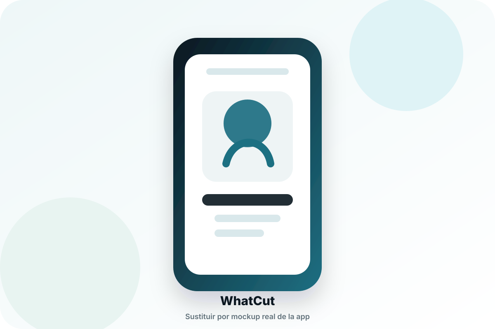
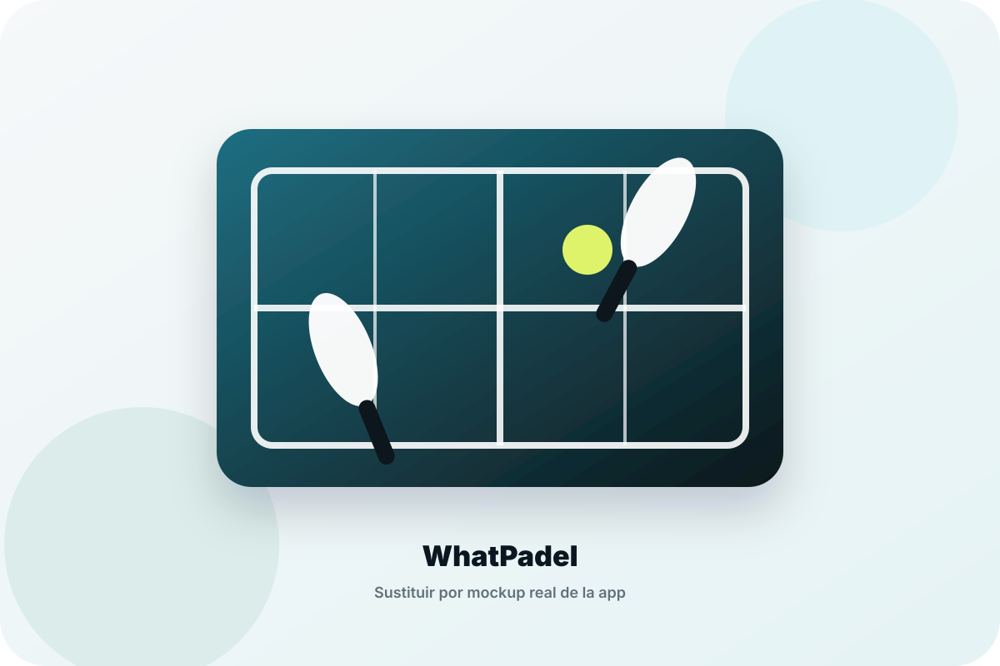

App móvil · IA · Red social
WhatCut
App/red social relacionada con cortes de pelo e inteligencia artificial. Proyecto real publicado en Android/iOS que ha conseguido más de 250.000 descargas.

Ingeniero Informático especializado en ciberseguridad, certificación de productos de seguridad y desarrollo de aplicaciones con impacto real. Combino criterio técnico, visión de producto y experiencia creando proyectos propios publicados.
Quién soy
Soy Carlos López, ingeniero informático especializado en ciberseguridad. Mi perfil combina certificación y evaluación de productos de seguridad, criptografía aplicada, desarrollo móvil/web y creación de productos digitales propios.
Me interesa entender los sistemas desde dentro: cómo se diseñan, cómo se protegen, cómo se validan y cómo se convierten en soluciones útiles para usuarios reales. Por eso mi portfolio no se limita al hacking: también muestra producto, desarrollo y experiencia técnica profesional.
Proyectos
Esta sección tiene el mayor peso del portfolio: proyectos desarrollados, publicados o preparados como producto digital, con estructura lista para seguir creciendo.

App móvil · IA · Red social
App/red social relacionada con cortes de pelo e inteligencia artificial. Proyecto real publicado en Android/iOS que ha conseguido más de 250.000 descargas.

Producto digital · Pádel · Comunidad
App orientada al mundo del pádel para ayudar a jugadores a conectar, encontrar pareja, mejorar su perfil y participar en una comunidad relacionada con el deporte.
Estructura preparada para añadir nuevos proyectos, casos de producto, laboratorios técnicos o contribuciones open source.
Ciberseguridad y hacking ético
Me interesa la ciberseguridad desde un enfoque práctico y profesional: evaluación técnica, análisis de seguridad, robustez, conformidad y aprendizaje continuo en seguridad web, mobile security y AppSec.
Experiencia en Common Criteria, LINCE, MEMEC, CCN-STIC, evaluación de productos de seguridad, evidencias técnicas y revisión de requisitos.
Análisis de mecanismos criptográficos, cifradores, comunicaciones seguras, HMAC, AES, PKI y requisitos de seguridad asociados.
Interés por seguridad web, mobile security, pruebas de seguridad, análisis técnico, explotación controlada y documentación clara de hallazgos.
A lo que me dedico
Actualmente trabajo en validación, certificación y pruebas de productos de ciberseguridad. Mi actividad se centra en evaluar sistemas y mecanismos criptográficos, analizar conformidad, revisar requisitos de seguridad y generar documentación técnica trazable.
Quiero seguir evolucionando hacia roles cada vez más técnicos dentro de ciberseguridad: AppSec, pentesting web/mobile, seguridad de producto y análisis técnico de sistemas reales.
Revisión de sistemas, funcionalidades de seguridad, mecanismos criptográficos y comportamiento frente a requisitos.
Pruebas orientadas a validar cumplimiento, resistencia, criterios de evaluación y evidencias verificables.
Interés claro en seguridad de producto, AppSec, pentesting web/mobile y análisis práctico de aplicaciones.
Tecnologías y skills
Contenido técnico